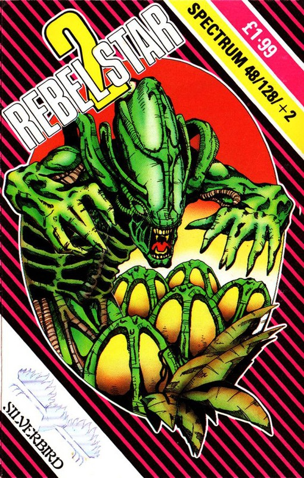
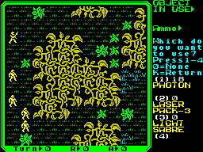

Rebel Star 2


{kind=link}

| Publisher: | Silverbird |
| Price: | £1.99 |
| Year: | 1989 |
| Source: | CRASH, Issue 64 |

Julian Gollop may have pinched a few ideas from Aliens for the plot and gameplay of Rebel Star 2 (not to mention Silverbird with their cover), but those of you eagerly awaiting the game can forgive Mr Gollop for any lapse of originality.
The planet Thray 6 has been taken over by warring aliens who are getting ready for an attack on Rebelstar itself. The Rebelstar Raiders are dropped down on the planet with orders to destroy as many alien lifeforms as possible.

As represented in the game Thray-6 is a rather small planet, but is still a moderately-sized battlefield comprising an alien fortress and swamplands. A small section of the battlefield is always on display, and by moving the cursor around you can scroll across the battlefield at will.
The game begins with the Raiders on the western side of the swamp with, not surprisingly, the alien fortress on the other side. The Raiders have 15 turns before their drop ship lands near the fortress, and another 11 to get on board before it takes off again. If any alien eggs can be brought back for research purposes so much the better.
To get to the fortress the Raiders have to first cross rivers, swampland and marshes while avoiding the unwelcome attention of marsh rats, indestructible water monsters and aliens on aggressive search-and-destroy patrols. The only good thing about the swamp is that it can provide cover from enemy fire.
In true Rebel Star-style the Raiders have a set number of action points to use up each turn through movement, combat and other actions — like picking things up and loading weapons.
Needless to say being wounded often results in a massive, and permanent loss of action points per turn. Unfortunately the aliens are quite merciless and very good shots, so keeping under cover is of paramount importance.
Although it is possible to engage in hand-to-hand combat, it’s not advisable and most of the time combat involves sidearms. Aimed, snap and opportunity shots are possible and it can all get very exhilarating to see laser bolts flying back and forth, occasionally missing by pixels. So hopefully even arcade fans should enjoy the game.
The Raiders are mostly armed with laser rifles, although a few are equipped with highly effective Photon guns. The latter equipped soldiers are the key to success in Rebel Star 2. Without their firepower you’ll be lucky to survive until the drop ships lands, let alone get onboard. Actually winning the game rests on getting those alien eggs though, and they’re in the alien fortress with an acid-spitting Alien Queen, its vicious babies running amok and plenty of guards. Surviving the waves of alien troops is tense enough, running around the alien fortress will have you sweating blood!
Although the concept behind Rebel Star 2 differs little from the original, the methods of play are different and the game itself offers a respectable level of strategic challenge. With excellent graphics as well it’s all highly engrossing. This is a game to appeal not only to strategists, but also fans of the Alien movies and in fact anyone who enjoys a really good — and very tense — game.
Presentation 75%
Packaging is typically budget with very brief instructions. In-game layout is neat with a clean appearance and very user-friendly command system. The resetting of the machine once the game is over is a minor setback, however
Graphics 83%
Menacing looking Giger-style aliens, weird and wonderful swamp flora and fauna, all colourful and highly detailed
Rules 64%
Adequately explained if short, but it’s left to the player to unravel the actual mechanics of play through good old trial-and-error
Playability 91%
Far easier to get into than most other strategy games, 1 or 2 player options and 8 skill levels to provide the long term challenge
Overall 90%
A great sequel and a compelling, highly rewarding strategy game in its own right. Not to be missed